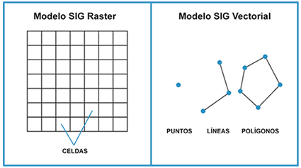

Modelos de representación de los datos espaciales en un SIG
A través de un Sistema de Información Geográfica, es posible modelar la realidad de dos formas principales: a través de un modelo vectorial o un modelo ráster.
- Un modelo ráster se caracteriza por estar formado por matrices o grillas que almacenan información numérica. Estas matrices están formadas por pixeles o celdas ordenadas en filas y columnas.
- Un modelo vectorial se caracteriza por tener una estructura vectorial asociada a una entidad geométrica espacial. Estas geometrías que permiten modelar la realidad son de tres tipos: puntos, líneas (segmentos que unen dos puntos) y polígonos (unión de varias líneas).

Fuente: Olaya, 2014.